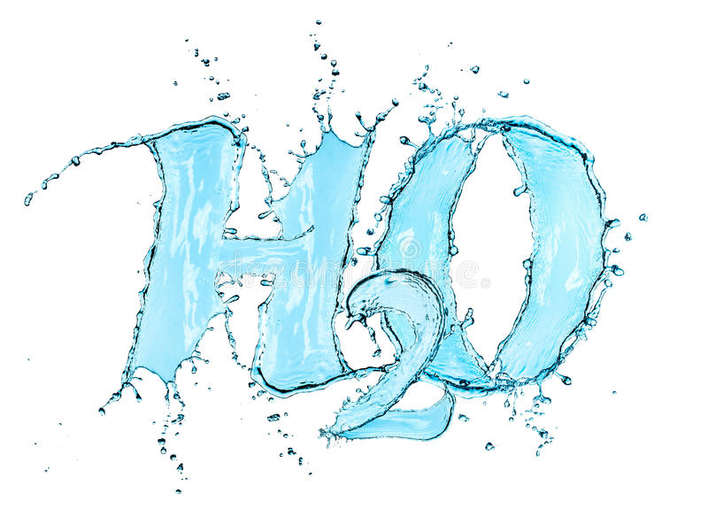

Il 2011 è stato nominato dall'ONU, dall'UNESCO e dalla IUPAC "Anno internazionale della Chimica".
Tra le iniziative proposte a vari livelli, ve n'è una simpatica ospitata questo mese (la terza edizione del 2011) sul blog del "chimico impertinente" Gifh, ed è il Carnevale della chimica.

L'ACQUA: UNA SOLUZIONE CHIMICA, è il tema proposto; l'argomento, pur esplicito, non è letteralmente vincolante poichè sono ammesse opportune divagazioni trasversali dalla secca formula H2O.
Apprezzando l'invito di Gifh a partecipare a questa edizione del Carnevale, che ha scopo divulgativo scientifico ed è dedicato principalmente ai non chimici, tenterò di scrivere qualcosina che mi verrà in mente che abbia attinenza al tema proposto.
La scadenza del "gioco" è il 23 marzo, quindi se entro tale data si leggerà qualcosa di acquoso sul blog, quella sarà la mia mascherata...